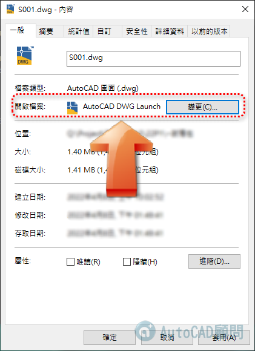
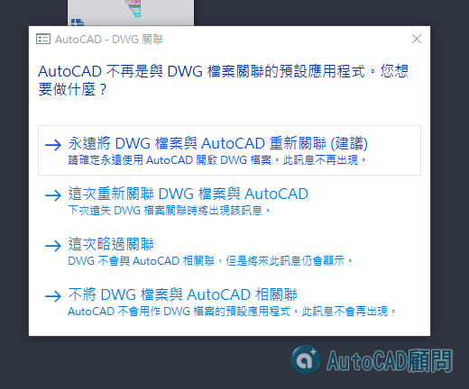

狀況1:當一部電腦中有安裝多套 AutoCAD版本
請將開啟檔案 變更為 AutoCAD DWG Launcher
如此一來開啟dwg檔案會比較正常🎉
註：使用檔案總管開啟DWG，會以後電腦最後啟動的AutoCAD版本開啟DWG

狀況2:當開啟dwg檔案時出現以下訊息
請選擇AutoCAD永遠與DWG關聯

如果以上步驟仍無法正常或正確開啟DWG圖檔，請參考以下步驟:
重置紀要 >> 還原軟體預設 >> 移除重新安裝
1.一般可能為ARG紀要異常，可以先試著重置ARG紀要。
2.如果不行再使用還原AutoCAD軟體預設。
3.最後一步再選擇移除重灌CAD(前提要正版，非正常版可能安裝不完全)。